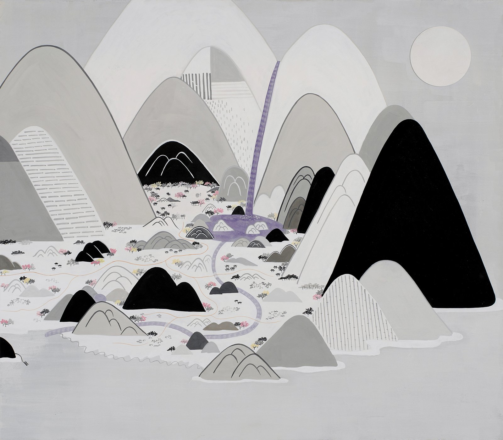
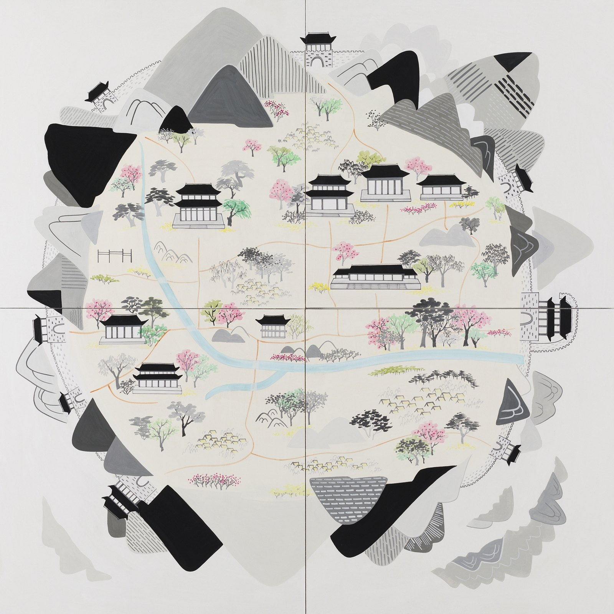
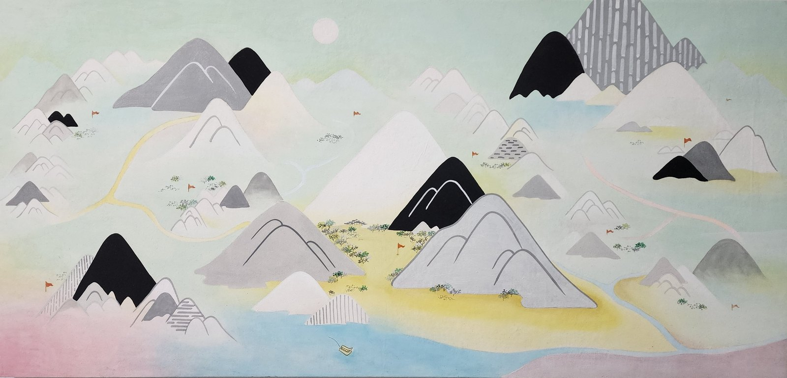
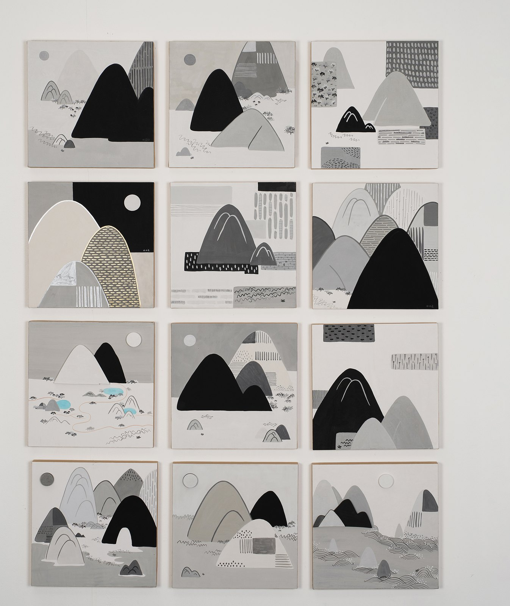
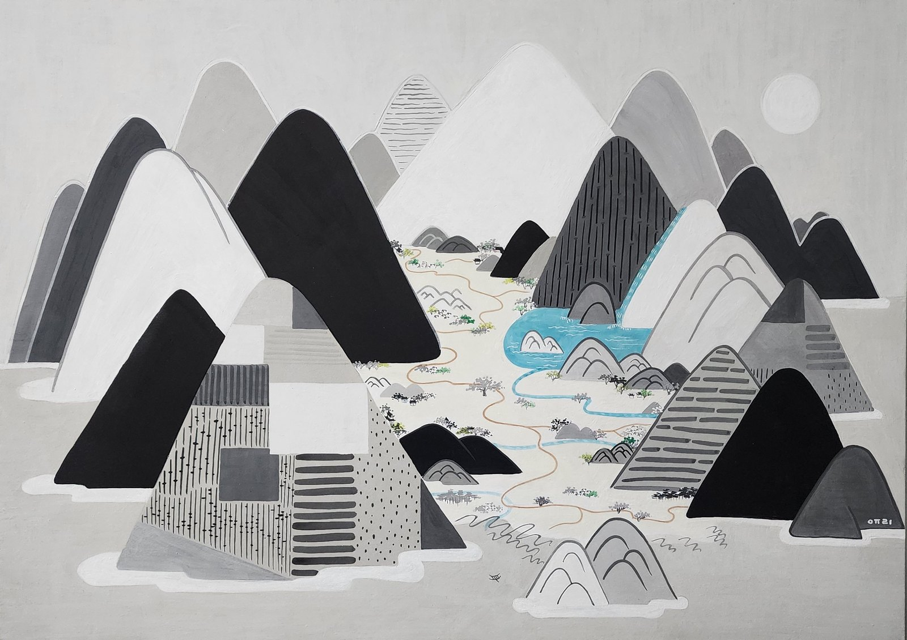
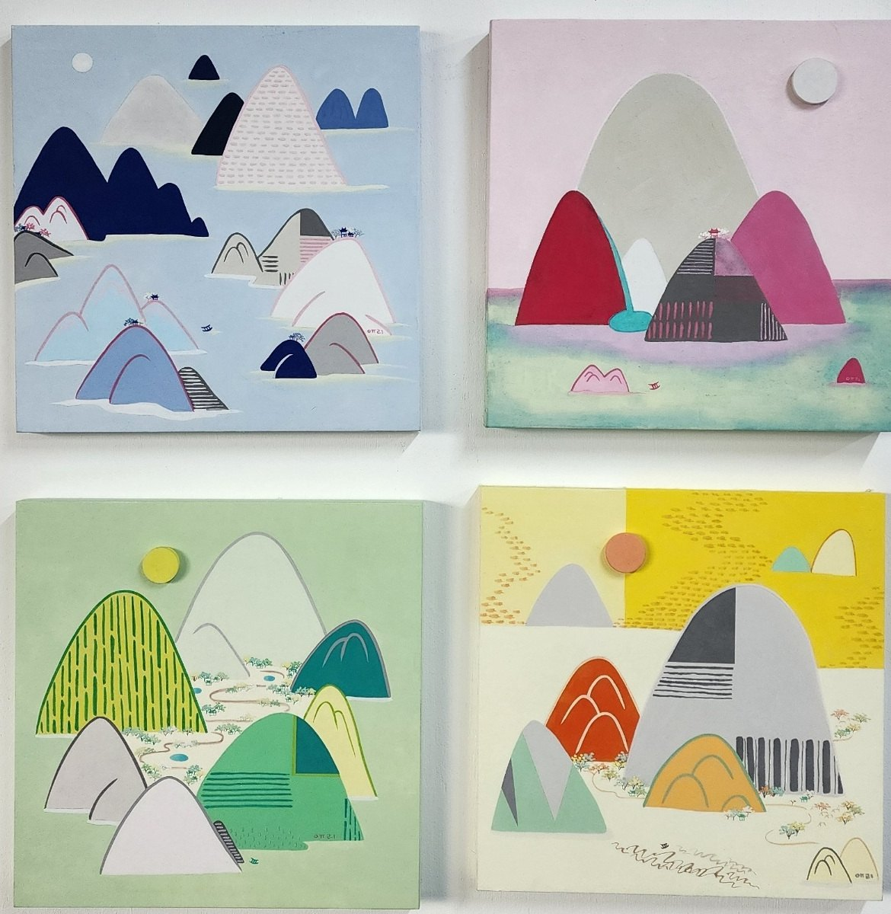
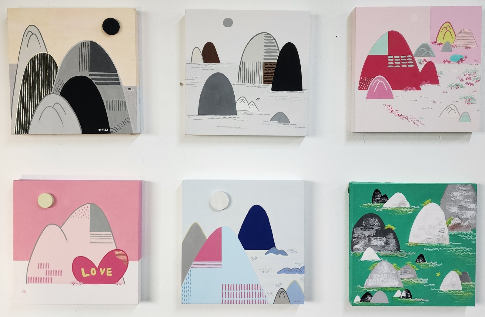
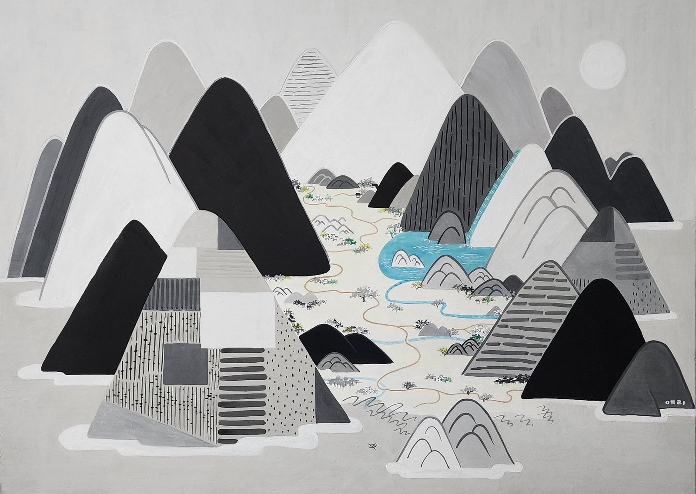
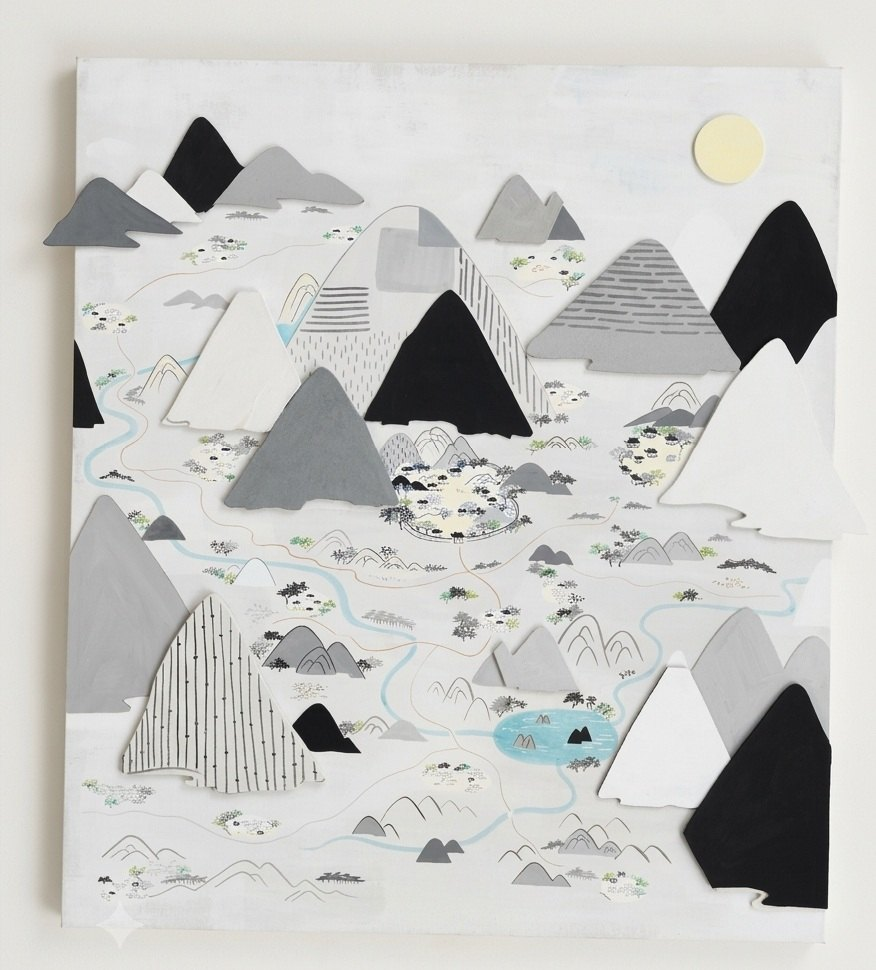

In East Asian painting there is a word, wayu — to lie down and wander through the scenery inside a picture. Lee Yu-ri adds to it hyu, the character for rest. Wandering is freedom, unbound by anything; resting is the quieter room where the mind is cared for. She compresses the two into four characters — hyuyu sansu, a landscape for resting and wandering.
Her gaze begins in real mountains and rivers, but what she paints is not what the eye sees. It is the scenery that stays in the mind. Ink in black, white and grey has always been her source; travelling in search of rest, she turns what she feels into shape and colour.
Three things return again and again in her work. The patterns drawn inside the mountains are forests and plants, rice fields and paths. The tiled roofs carry the warmth of nostalgia — old roof tiles seen at a mountain temple or a quiet village, settling the heart like a place of refuge. And there is an empty boat, plain and unadorned, caring nothing for how it is seen: her way of saying that she will go her own way.
“Along the river, or out towards the sea, I board the empty boat with no destination, and set off somewhere again.”

Another World II별천지 Ⅱ
The largest work in the exhibition. Byeolcheonji means a world other than the one we stand in. The mountains here are not painted flat but cut out and set forward from the surface, so their shadows shift as you move. Step a pace to either side and the depth changes with you — the artist wanted to hold the moment just before walking into somewhere unknown.

Mureung Valley무릉계곡
“A soft breeze. The sound of a cool waterfall. The ease of nature, far from the dust of the world.” Built only from black, white and grey. Seen from a distance it is still; up close the slopes fill with tiny marks — trees, grasses and the paths people once walked.

Spring in Seoul서울의 봄
Drawn from a tourist map of Seoul. Gyeongbokgung, Changgyeonggung and Jongmyo appear, redrawn through the artist's eye. Like old Korean pictorial maps, distance and direction give way to what matters: what is loved is drawn large, and placed at the centre.

Bongjeongam Hermitage봉정암
“A deep night bright with stars; I make a wish.” Bongjeongam is the highest hermitage in Korea, set deep in the Seoraksan mountains, where almost no artificial light reaches. Small tiled roofs rest along the ridges beneath a black sky scattered with gold.

Mureungdowon — The Peach Blossom Land무릉도원
Pale pastel mist and dreamlike colour. “In this faint landscape on the border between the real and the imagined, I feel the mind grow calm. The mist rising between layered ridges carries me towards rest. It is as still as if time had stopped.” Here it is not the colour that has changed so much as the air.

Gyeongpo Lake경포호
“Sailing along, the water is full of peach blossom. Let us rest here a while.” Gyeongpo Lake in Gangneung, remembered in a spring of full cherry blossom. A small boat floats on the jade water — the same plain boat that recurs through her work, and which the artist calls herself.

Treasure Island보물섬
“A secret island held in rough black-and-white ranges, where the real treasure hidden is rest and ease. The blue waterfall running between grey ridges offers a quiet refuge that never runs dry.” There is no gold here. Look closely and each mountain carries a different pattern: forests, fields, paths — places where people live.

Hide and Seek숨바꼭질
“The cry of insects, the sound of a soft wind. Under the moonlight it is calm and easy. A night so good you wish the moment would last forever. But one cannot rest forever. When time passes, we must return.” Another work of cut and raised forms. The title holds the whole exhibition in it: a rest taken in order to go back.

Hyuyu Journey休遊여행
Twelve small panels. “The boat is me and I am the boat. Sea, land, mountain — I can go anywhere. In search of rest.” In each panel the boat sits somewhere different: on water, between peaks, drawn up on land. Twelve places one boat has been.

Sallyeo Soyo — Letting Cares Go, Wandering Free산려소요
Four panels telling one story. Falling asleep after an ordinary, wheel-turning day, the artist wakes to find herself arriving by boat at a silent island where it is neither day nor night. A familiar house, a path to the water, a pavilion where she picks up a brush and paints as she pleases, then a hammock and sleep in the moving air. When rest has filled her, she takes the boat back to the world.

New World신세계
Six panels. “Somewhere I have never been; something draws me and I arrive. The new world before my eyes came to me as a radiant, mysterious scene the noise of reality cannot reach. Past the border of the familiar landscape, I step into a strange paradise made of soft pink and many colours.” From 2026 her mountains begin to take on colour.

Journey Through Rivers and Mountains강산유람
Four panels. “I go as the current goes; I give my body to the sea.” Another world unfolding in the colours of spring, summer, autumn and winter — four seasons seen at once from a single place, where she looks for small stirrings of delight and calm within ordinary days.
- Dates
- 14 – 19 October 2026
- Hours
- 10:00 – 18:00, open daily
- Venue
- Insa Art Center, 3F Special Gallery 1